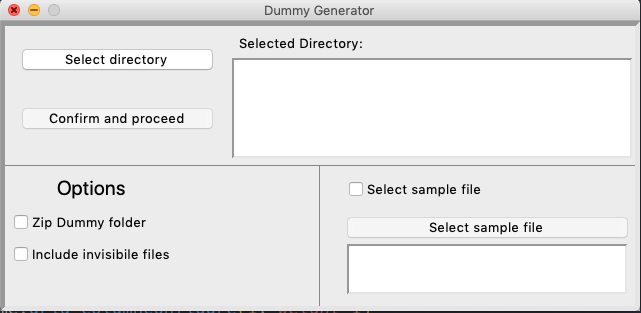

I primi step sono per lanciare lo script tramite la GUI. nel caso dovessero fallire, allora continua con gli altri step per farlo partire dal terminale.
Apri il terminale e scrivi:
python -m tkinter
Dovrebbe farti vedere una finestra di un app con qualche testo random .
Se invece ti dice un errore del tipo: blabla python3.7: No module named tkinter,
allora sempre sul terminale scrivi (ti chiedera la password):
sudo apt-get install python3-tk
Per lanciare lo script (come al solito) scrivi sul terminale python, poi trascina lo script dummy_gui.py accanto (ricorda lo spazio) e premi invio:
python /home/blabla/dummy_gui.py
se scrivi il percorso manualmente invece di trascinarlo, è importante fare attenzione se il nome è scritto con lettera maiuscola. desktop non è uguale a Desktop

Lo screenshot è stato fatto sul mac, su linux è leggermente diverso, ma comunque dovrebbe essere abbastanza intuitivo a capire cosa devi fare.
SEND_ME.zip nella stessa cartella dove ce il dummy_gui.py.
Per lanciare lo script (come al solito) scrivi sul terminale python e poi trascina lo script dummy_generator.py accanto (ricorda lo spazio).NON PREMERE ANCORA INVIO
python /home/blabla/dummy_gui.py
Per abilitare le opzioni (zip file e include invisibile files) devi scrivere i seguenti argomenti dopo il nome del file (ricorda lo spazio): -z (per zippare la cartella), -i (per includere i file invisibili). NON PREMERE ANCORA INVIO
python /home/blabla/dummy_gui.py -zi
scrivere
-zio-z -iè uguale
Trascina la cartella che vuoi copiare in questo caso la cartella "genitore" dove salvate i podcast (ricorda lo spazio) e premi invio
python /home/blabla/dummy_gui.py -zi /home/blabla/Desktop/Podcast
se scrivi il percorso manualmente invece di trascinarlo, è importante fare attenzione se il nome è scritto con lettera maiuscola. desktop non è uguale a Desktop
SEND_ME.zip nella stessa cartella dove ce il dummy_generator.py.